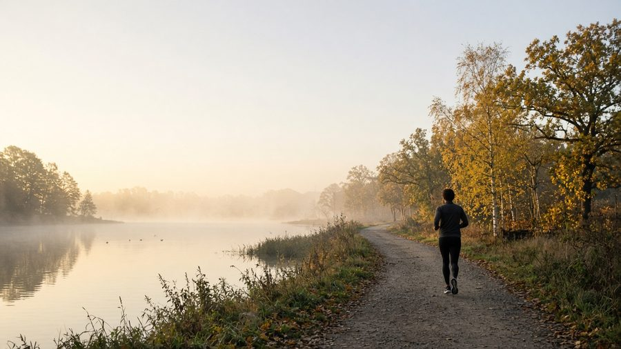

Lätt
Djurgården runt
Stockholms klassiker. Följ Djurgårdsbrunnsviken österut på mjukt grus, korsa vid Djurgårdsbrunnskanalen och vänd tillbaka längs Saltsjön förbi Blockhusudden och Waldemarsudde. Nästan bilfritt hela vägen.
ca 9,5 kmDistans (ungefärlig)
50–65 minLugnt tempo
LättNivå
Start: Djurgårdsbron vid Nordiska museet (spårvagn 7)
- Mest grus och asfalt, platt utom trappor vid Waldemarsudde
- Spring före 09 på helger – sen blir det trångt
- Påfyllning: kaféer vid Djurgårdsbrunn och Rosendal